<!DOCTYPE html>
<html lang="en">
<head>
<meta charset="UTF-8">
<meta name="viewport" content="width=device-width,initial-scale=1">
<title>4.3 Types and Properties of Triangles — Geometry</title>
<meta name="description" content="Class 6 Mathematics · Term 2 · Geometry · 4.3 Types and Properties of Triangles">
<link rel="icon" href="data:image/svg+xml,<svg xmlns='http://www.w3.org/2000/svg' viewBox='0 0 100 100'><text y='.9em' font-size='90'>📘</text></svg>">
<link rel="stylesheet" href="../../../assets/book.css">
<link rel="stylesheet" href="https://cdn.jsdelivr.net/npm/katex@0.16.11/dist/katex.min.css" crossorigin="anonymous">
</head>
<body>
<header class="topbar">
<div class="topbar-in">
  <div class="crumb">
    <span class="c1"><a href="../../../index.html">Library</a> · <a href="../../index.html">Class 6 Mathematics · Term 2</a></span>
    <span class="c2">Geometry · 4.3 Types and Properties of Triangles</span>
  </div>
  <a class="tb-btn" data-nav="prev" href="../../04-geometry/02-basic-elements-of-a-triangle-4.2/index.html" title="4.2 Basic Elements of a Triangle">←</a>
  <details class="drawer"><summary class="tb-btn" title="Sections in this chapter">☰</summary>
<div class="drawer-panel"><div class="dh">Geometry</div><a href="../01-introduction-4.1/index.html">4.1 Introduction</a><a href="../02-basic-elements-of-a-triangle-4.2/index.html">4.2 Basic Elements of a Triangle</a><a href="../03-types-and-properties-of-triangles-4.3/index.html" aria-current="page">4.3 Types and Properties of Triangles</a><a href="../04-exercise-4.1/index.html">Exercise 4.1</a><a href="../05-construction-of-perpendicular-lines-4-4-1-introduction-4.4/index.html">4.4 Construction of Perpendicular Lines 4.4.1 Introduction</a><a href="../06-construction-of-parallel-lines-4.5/index.html">4.5 Construction of Parallel Lines</a><a href="../07-ict-corner/index.html">ICT CORNER</a><a href="../08-exercise-4.2/index.html">Exercise 4.2</a><a href="../09-exercise-4.3/index.html">Exercise 4.3; Miscellaneous Practice Problems</a><a href="../10-summary/index.html">Summary</a></div></details>
  <a class="tb-btn" data-nav="next" href="../../04-geometry/04-exercise-4.1/index.html" title="Exercise 4.1">→</a>
  <button class="tb-btn" data-theme-toggle title="Toggle light / dark" aria-label="Toggle light or dark theme">◐</button>
</div>
<div class="progress"><span style="width:68.1%"></span></div>
</header>
<main class="wrap">
<div class="sec-head">
  <p class="eyebrow"><a href="../index.html">Chapter 4 · Geometry</a></p>
  <h1>4.3 Types and Properties of Triangles</h1>
  <p class="sec-meta">Textbook pages 3–9 · 19 figures</p>
</div>
<article class="prose">
<p>Some triangles are drawn in the dotted sheet. Try to draw as many triangles as you can. Then, measure the sides and angles of all triangles and fill the table given below</p>
<figure class="fig table-fig wide">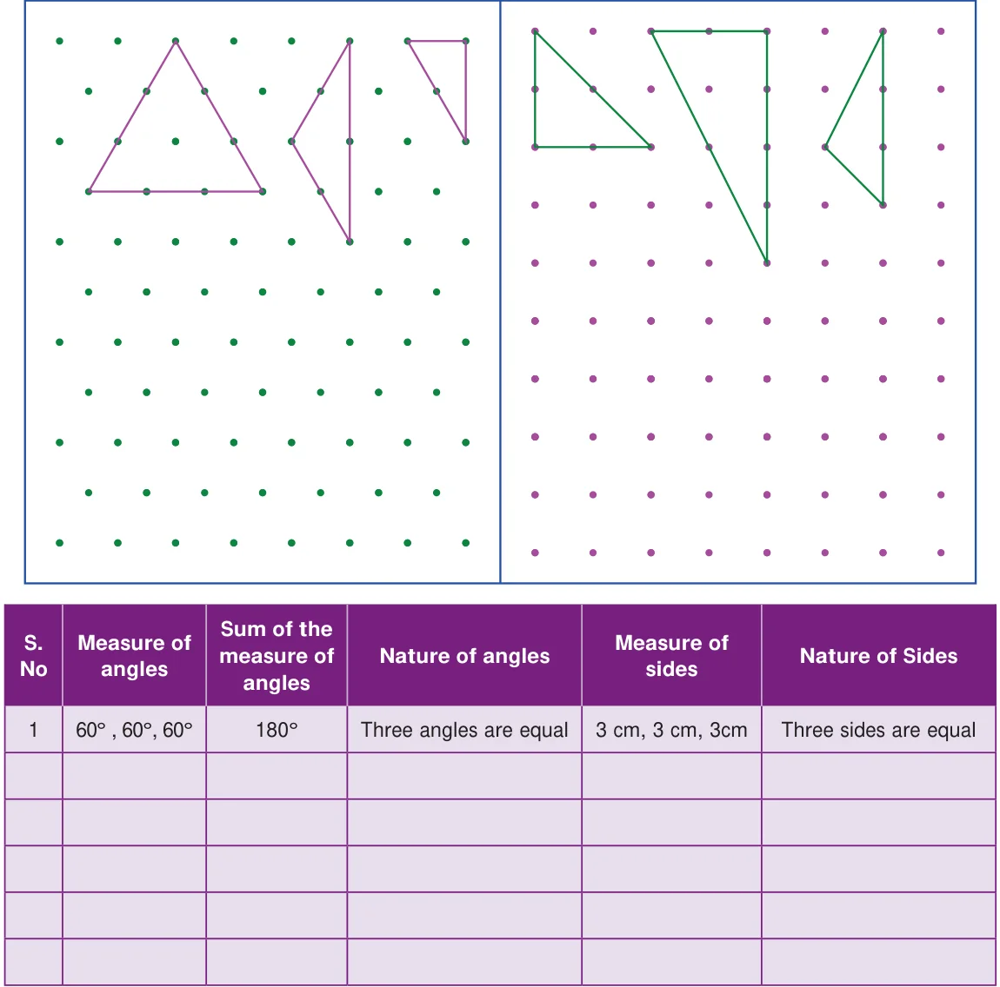</figure>
<p>From the table, we observe the following:</p>
<p>In a triangle,</p>
<ul class="qlist">
<li><span class="mk">•</span><span class="lt">If the measure of all angles are different, then all sides are different.</span></li>
<li><span class="mk">•</span><span class="lt">If the measure of two angles are equal, then two sides are equal.</span></li>
<li><span class="mk">•</span><span class="lt">If the measure of three angles are equal, then three sides are equal and</span></li>
</ul>
<p>each angle measures 60˚.</p>
<ul class="qlist">
<li><span class="mk">•</span><span class="lt">Sum of three angles of a triangle is 180˚.</span></li>
</ul>
<aside class="sidenote"><p>GEOMETRY</p></aside>
<figure class="fig table-fig wide">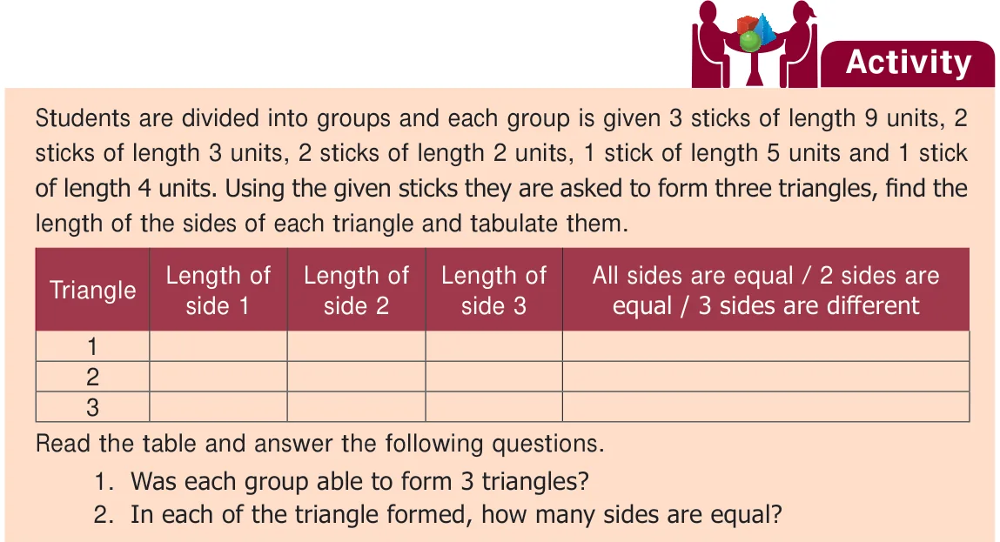</figure>
<h3 id="s-4-3-1-types-of-triangle-based-on-its-sides">4.3.1 Types of triangle based on its sides</h3>
<ul class="qlist">
<li><span class="mk">i)</span><span class="lt">If three sides of a triangle are different in lengths, then it is called a Scalene Triangle</span></li>
</ul>
<h2 id="s-examples">Examples:</h2>
<figure class="fig">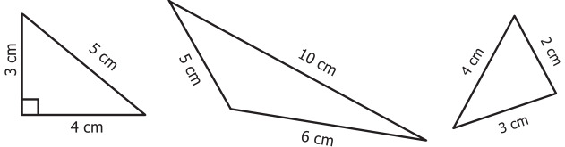</figure>
<ul class="qlist">
<li><span class="mk">ii)</span><span class="lt">If any two sides of a triangle are equal in length, then it is called an Isosceles Triangle</span></li>
</ul>
<h2 id="s-examples">Examples:</h2>
<figure class="fig">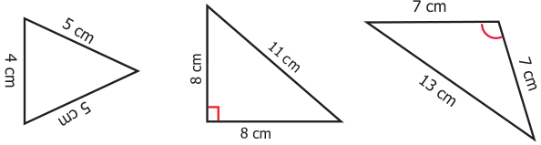</figure>
<ul class="qlist">
<li><span class="mk">iii)</span><span class="lt">If three sides of a triangle are equal in length, then it is called an Equilateral Triangle</span></li>
</ul>
<h2 id="s-examples">Examples:</h2>
<figure class="fig">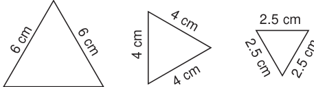</figure>
<p class="lead">Thus, based on the sides of triangles, we can classify triangles into 3 types.</p>
<figure class="fig table-fig wide">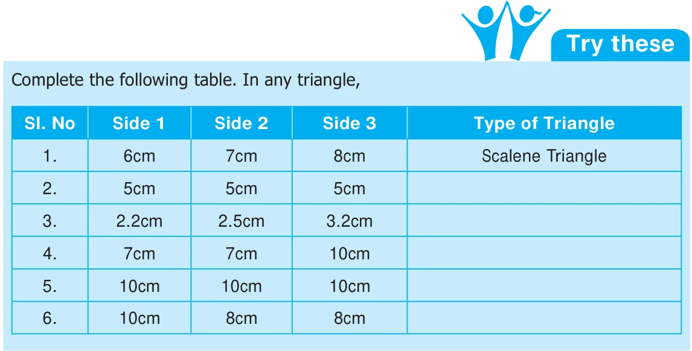</figure>
<h3 id="s-4-3-2-types-of-triangle-based-on-its-angles">4.3.2 Types of triangle based on its angles</h3>
<p>Write the given angles as acute, obtuse or right angle formed by two line segments AB and AC</p>
<figure class="fig">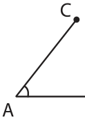</figure>
<figure class="fig side-fig">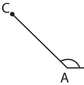</figure>
<p>\(\angle A\) is ____________ \(\angle A\) is ___________ \(\angle A\) is ___________</p>
<p>Now, join the third side to form a triangle in each case and identify the kinds of angles and list them down.</p>
<figure class="fig">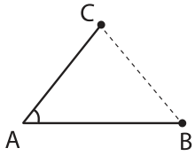</figure>
<figure class="fig">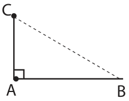</figure>
<figure class="fig side-fig">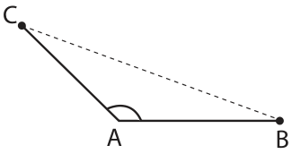</figure>
<p>\(\angle A\) is ____________ \(\angle A\) is ___________ \(\angle A\) is ___________</p>
<p>\(\angle B\) is ____________ \(\angle B\) is __________ \(\angle B\) is ___________</p>
<p>\(\angle C\) is ___________ \(\angle C\) is ___________ \(\angle C\) is ___________</p>
<aside class="sidenote"><p>GEOMETRY</p></aside>
<p>Now carefully look at these three triangles,</p>
<ul class="qlist">
<li><span class="mk">i)</span><span class="lt">If three angles of a triangle are acute angles (between \(0 ^{\circ}\) and \(90 ^{\circ}\) ), then it is called an</span></li>
</ul>
<p class="lead">Acute Angled Triangle.</p>
<h2 id="s-examples">Examples:</h2>
<figure class="fig">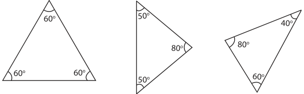</figure>
<ul class="qlist">
<li><span class="mk">ii)</span><span class="lt">If an angle of a triangle is a right angle (90˚), then it is called a Right Angled Triangle.</span></li>
</ul>
<h2 id="s-examples">Examples:</h2>
<figure class="fig">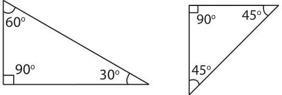</figure>
<ul class="qlist">
<li><span class="mk">iii)</span><span class="lt">If an angle of a triangle is an obtuse angle (between 90˚ and 180˚),then it is called</span></li>
</ul>
<p>an Obtuse Angled Triangle.</p>
<h2 id="s-examples">Examples:</h2>
<figure class="fig">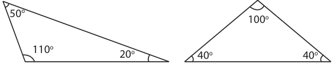</figure>
<p class="lead">Thus, based on the angles of triangles, we can classify triangles into 3 types.</p>
<figure class="fig table-fig wide">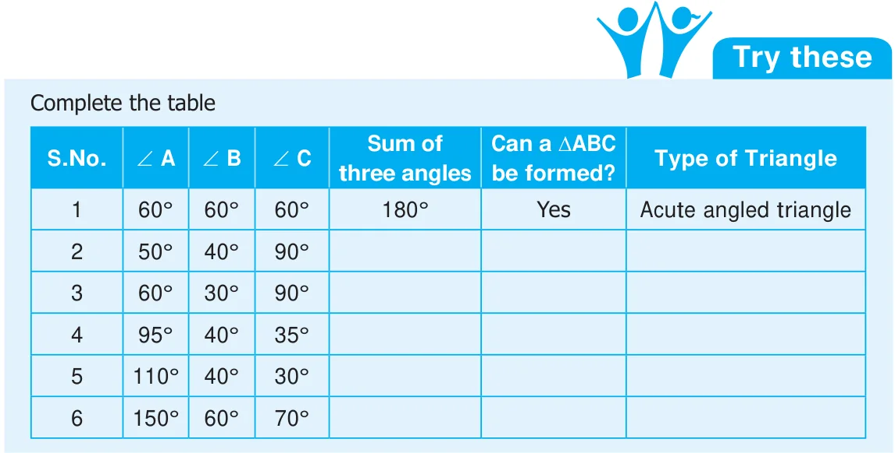</figure>
<h2 class="callout-h" id="s-activity">Activity</h2>
<p>A triangle can have three acute angles, but cannot In the given figure, there are some have more than one right angle triangles. Measure their sides and or an obtuse angle. angles and name them in two ways.</p>
<aside class="sidenote"><p>(One is done for you!)</p><p>Equilateral &amp; Acute Triangle</p></aside>
<h3 id="s-4-3-3-triangle-inequality-property">4.3.3 Triangle Inequality property</h3>
<p>Think about the situation:</p>
<p>Three students Kamala, Madhan and Sumathi are asked to form triangles with the given sticks of measure 6cm, 8cm, 5cm; 4cm, 10cm, 5cm and 10cm, 6cm, 4cm respectively. All of them try to form a triangle. While Kamala, the first girl is successful in forming a triangle, Madhan and Sumathi, next to Kamala are struggling. Why?</p>
<p>When they are trying to join the ends of the two</p>
<p>smaller sticks, they find that the two smaller sticks coincide with the longer stick or shorter than the Note longer stick and they are unable to form triangles. If three sides are equal in From this, they understand that, length, then definitely a To form a triangle the sum of two smaller sides triangle can be formed</p>
<p>must be greater than the third side. Thus,</p>
<p class="lead">In a triangle, the sum of any two sides</p>
<p>is greater than the third side. This is known as Triangle Inequality property. If any two sides of the A triangle are given, then \(AB + BC\) ˃ CA the length of the third side will lie \(BC + CA\) ˃ AB between the difference and sum of \(CA + AB\) ˃ BC the lengths of two given sides.</p>
<aside class="sidenote"><p>GEOMETRY</p></aside>
<p>Example 1: Can a triangle be formed with 7 cm, 10 cm and 5 cm as its sides? Solution: Instead of checking triangle inequality by all the sides in the triangle, check only with two smaller sides.</p>
<p>Sum of two smaller sides of the triangle \(= 5+7=12\) cm ˃ 10 cm, the third side. It is greater than the third side. So, a triangle can be formed with the given sides.</p>
<p>Example 2: Can a triangle be formed with 7 cm, 7 cm and 7 cm as its sides? Solution: If three sides are equal, then definitely a triangle can be formed, as the triangle inequality is satisfied.</p>
<p>Example 3: Can a triangle be formed with 8 cm, 3 cm and 4 cm as its sides? Solution: The sum of two smaller sides \(= 3+4=7\) cm ˂8 cm, the third side. It is less than the third side. So, a triangle cannot be formed with the given sides.</p>
<figure class="fig table-fig wide">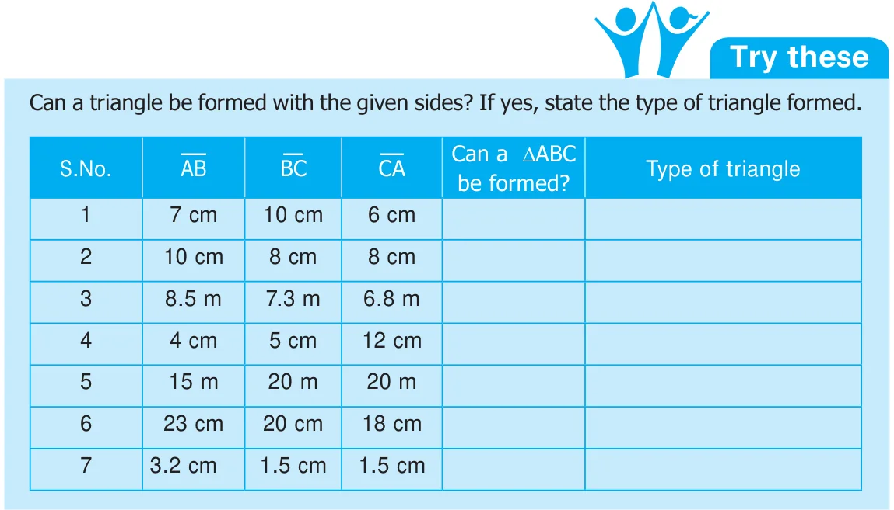</figure>
<p>Example 4: Can a triangle be formed with the angles 80˚, 30˚, 40˚? Solution: In a triangle, the sum of three angles is 180˚. Here, the sum of three angles = 80˚+ 30˚+ 40˚ = 150˚ (not equal to 180˚) So, a triangle cannot be formed with the given angles.</p>
<figure class="fig wide">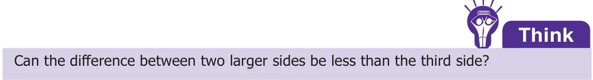</figure>
<h2 class="callout-h" id="s-activity">Activity</h2>
<p>A triangle game : In each turn a student must draw one line connecting two dots. A line should not cross other lines or touch other dots than the two that are connected to. If a student closes a triangle with his line then he gets a point. Once there are no more lines that can be drawn the game is over and the student who gains more points wins the game.</p>
<h2 class="callout-h" id="s-think">Think</h2>
<p>In a right angled triangle, what measures can the other two angles have?</p>
</article>
<nav class="pager"><a class="" data-nav="prev" href="../../04-geometry/02-basic-elements-of-a-triangle-4.2/index.html"><span class="dir">← Previous</span><span class="t">4.2 Basic Elements of a Triangle</span><span class="ch">Geometry</span></a><a class="nx" data-nav="next" href="../../04-geometry/04-exercise-4.1/index.html"><span class="dir">Next →</span><span class="t">Exercise 4.1</span><span class="ch">Geometry</span></a></nav>
</main><footer class="site">Generated from the source textbook PDFs · text, figures and exercises belong to their respective publishers.</footer><script defer src="https://cdn.jsdelivr.net/npm/katex@0.16.11/dist/katex.min.js" crossorigin="anonymous"></script>
<script defer src="https://cdn.jsdelivr.net/npm/katex@0.16.11/dist/contrib/auto-render.min.js" crossorigin="anonymous"
  onload="renderMathInElement(document.body,{delimiters:[
    {left:'\\(',right:'\\)',display:false},
    {left:'$$',right:'$$',display:true},
    {left:'\\[',right:'\\]',display:true}],throwOnError:false,ignoredTags:['script','noscript','style','textarea','pre','code']})"></script>
<script src="../../../assets/book.js"></script>
<script defer src="../../../../assets/search.js"></script>
<script defer src="../../../../assets/screenshot.js"></script>
</body>
</html>
